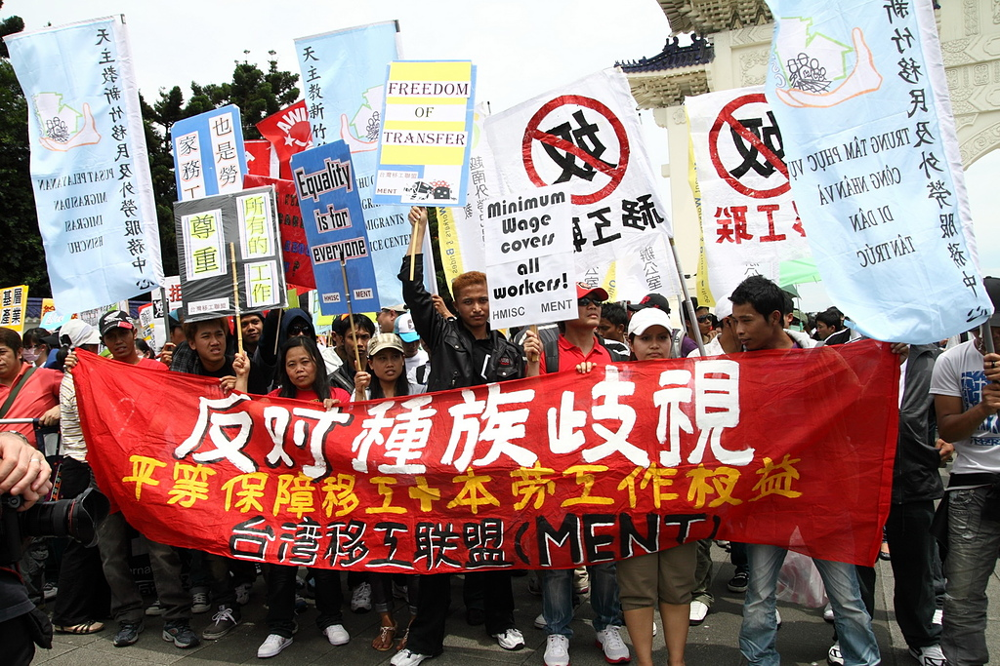
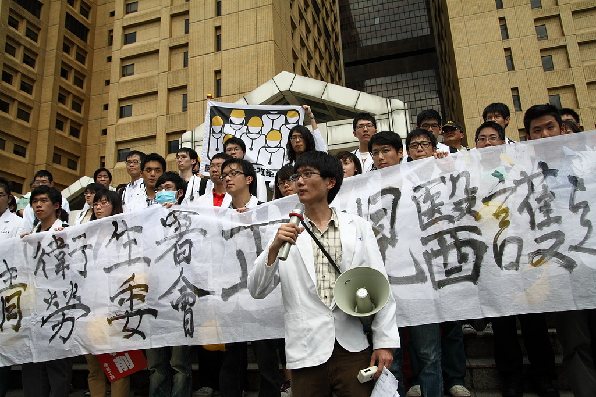
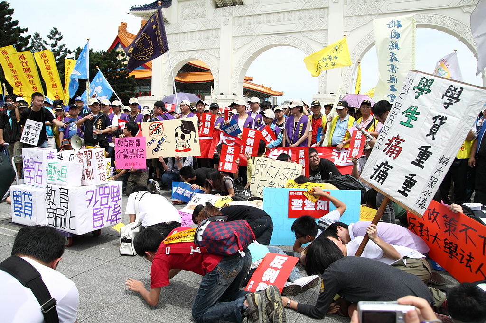
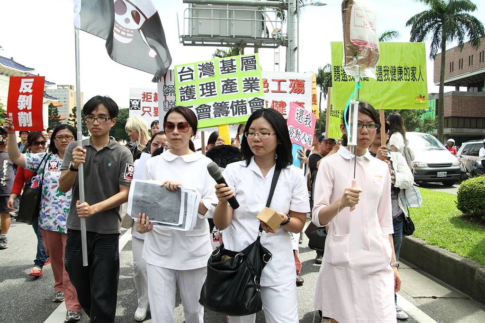
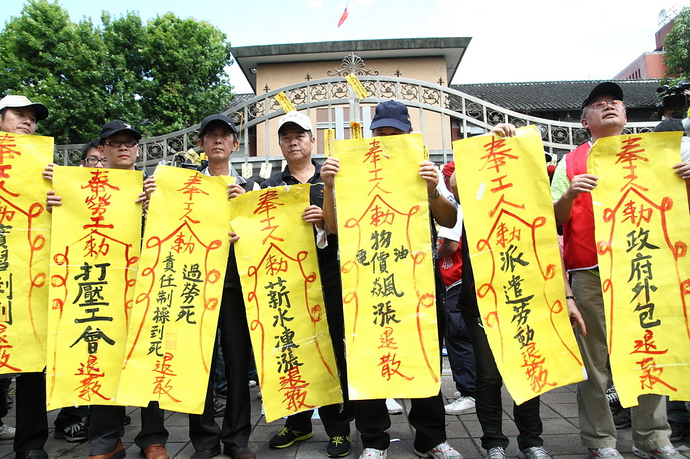

工、學、醫、護連同移工團體，串聯各界共同上街，浩浩蕩蕩在台北街頭喊出勞工怒吼，圖：張榮隆

醫師勞動改革小組主張，勞委會應立即將實習醫學生及受僱醫生全面納入勞基法保障範圍，維護醫生勞動權利及國人就一的品質。，圖：張榮隆

每學期申請就學貸款的學生逐漸攀升達40萬人，面對求學的壓力學生也參與五一遊行

台大醫院前，最近積極爭取權益的護理人員，痛批普遍的過勞、超時工作現象，「讓照顧病人的護士，自己卻變成病人」，圖：張榮隆

群眾手持寫著條條罪狀的「符咒」，將它貼在立法院大們及圍牆上，並請來「道士」拿著符水進行驅魔，希望這能讓立委們改邪歸正，圖：張榮隆